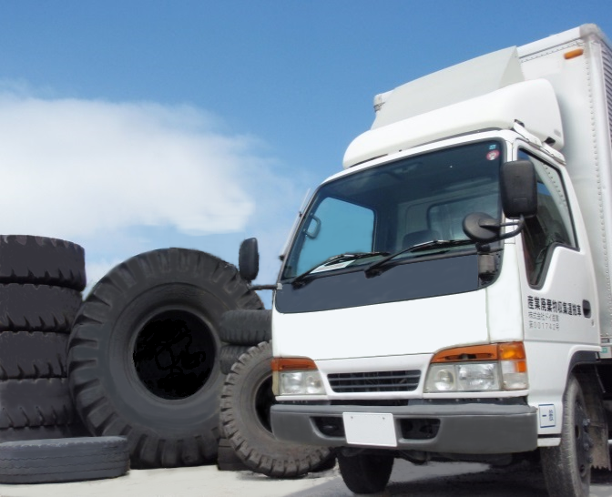

受入可能品目
1. 廃タイヤ
|
当社は、各種サイズの廃タイヤの処理を行っております。
♦ 詳細品目
※ 上記のホイル付品の受け入れ対応も行っております |
 |
|---|
2. 建設機械用合成ゴム製品
|
ゴムクローラーやゴムキャタピラー、ゴムパッド等の建設機械用品の処理も行っております。
♦ 詳細品目
※ 当社での収集運搬も可能です |
|---|
3. 各種廃プラスチック製品
|
タイヤ・建設機械用品に限らず、合成ゴム製品等の廃プラスチック製品の処理も行っております。
♦ 詳細品目
※処理にお困りの廃棄物があれば、お問い合わせください また、バッテリーの回収事業も行っております。
|
|---|